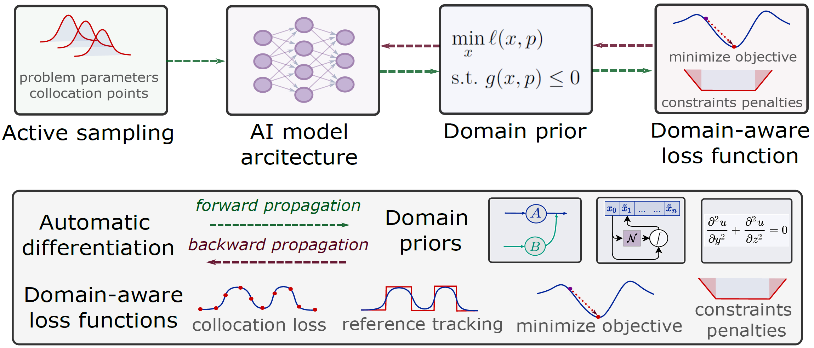

Overview
This tutorial introduces Scientific Machine Learning (SciML) as a unifying framework for integrating physical structure, optimization principles, and control-theoretic insights directly into learning architectures, positioned as a principled extension of classical methods rather than a replacement. We frame SciML-based modeling, optimization, and control as differentiable programs that combine physics-based structure, data-driven learning, constraints handling, and gradient-based optimization. Structured around four learning paradigms — learning to model (L2M) dynamical systems, learning to optimize (L2O) constrained optimization problems, and learning to control (L2C) methodologies — the tutorial equips participants with both theoretical grounding and practical skills through hands-on, code-driven exercises using PyTorch, JAX, and NeuroMANCER. Emphasis is placed on building differentiable, modular pipelines that embed physical laws and constraints to achieve data-efficient learning with improved interpretability, robustness, and compatibility with safety guarantees, with the broader aim of defining a forward-looking research agenda at the intersection of learning, optimization, and dynamical systems.
A Unified SciML Abstraction

Modeling, optimization, and control are formulated as differentiable programs that combine AI architectures, domain priors, domain-aware loss functions, trained end-to-end via automatic differentiation.
\[
\begin{aligned}
u^\star(\xi)
=
\arg\min_{u\in\mathcal U}
{\color{#E57373}{\mathcal J}}(u,
{\color{#8BC34A}{\xi}})
\\[0.5em]
\text{s.t.}\quad
{\color{#64B5F6}{\mathcal N}}(u,
{\color{#8BC34A}{\xi}})
=0,
\qquad
{\color{#64B5F6}{\mathcal B}}(u,
{\color{#8BC34A}{\xi}})
\le 0
\end{aligned}
\]
\[
{\color{#B39DDB}{\mathcal S_\theta}}
:
{\color{#8BC34A}{\xi}}
\longmapsto
u^\star(\xi)
\]
Here, \( \xi \) denotes sampled data, parameters, or scenarios, \( \mathcal J \) defines a domain-aware objective, \( \mathcal N \) and \( \mathcal B \) encode governing equations and constraints, and \( \mathcal S_\theta \) represents a learned parametric solution operator mapping problem instances to models, decisions, trajectories, or control actions.
Agenda
45 min
Introduction
- Motivation, traditional physics-based approaches vs modern data-driven approaches, brief history of SciML.
- SciML main concepts, methodologies and applications.
- Unified SciML abstraction, differentiable programming as enabling infrastructure.
45 min
Learning to Model (L2M)
- L2M problem formulation.
- Combining physics with data.
- Neural Ordinary Differential Equations (NODEs).
- Structured learning with Gaussian Processed (GP).
Break
Short break
45 min
Learning to Optimize (L2O)
- L2O problem formulation.
- L2O methodologies.
- Differentiable optimization.
- Feasibility restoration layers.
45 min
Learning to Control (L2C)
- L2C problem formulation.
- L2C methodologies.
- Differentiable Predictive Control (DPC).
- Learning to control ODEs and PDEs.
Slides and notebooks
Tutorial slides and coding examples in Google colab are available below.
Learning to Model (L2M)
Learning to Optimize (L2O)
Learning to Control (L2C)
Organizers
Thomas Beckers
Assistant Professor
Department of Computer Science
Institute for Software Integrated Systems
Vanderbilt University
Truong X. Nghiem
Associate Professor
Department of Electrical and Computer Engineering
College of Engineering and Computer Science
University of Central Florida
Ján Drgoňa
Associate Professor
Department of Civil and Systems Engineering
Ralph O'Connor Sustainable Energy Institute (ROSEI)
Data Science and AI Institute (DSAI)
Johns Hopkins University
References and resources
- JHU Course EN.560.652 — SciML for Modeling, Optimization, and Control of Dynamical Systems.
- Neuromancer — SciML library for modeling, optimization, and control.
- L4DC — Learning for Dynamics and Control conference.